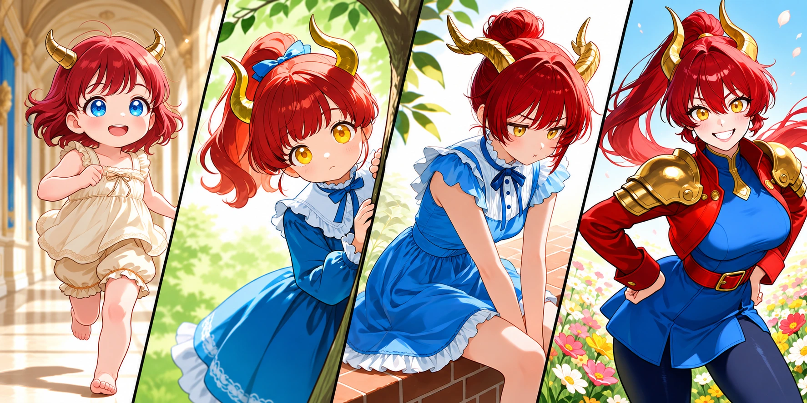
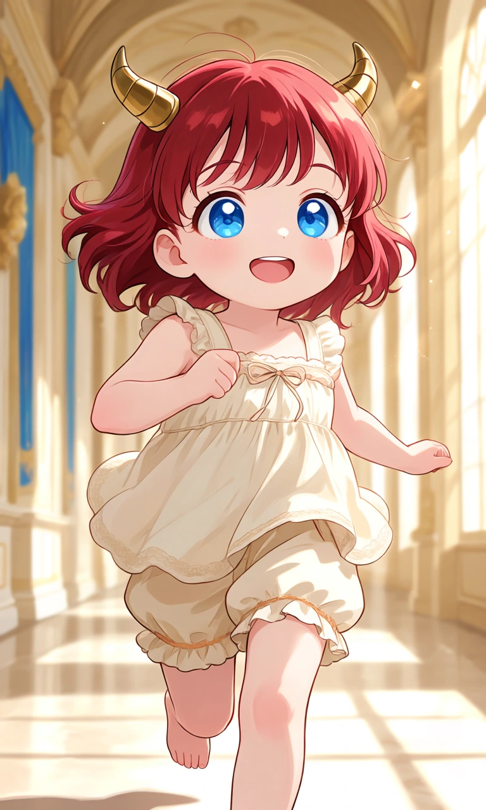
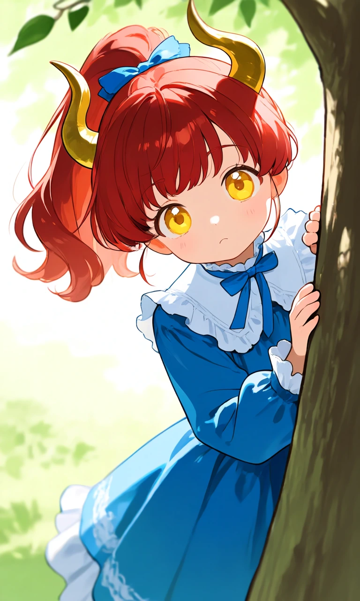
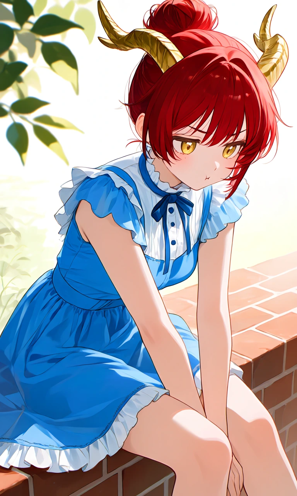
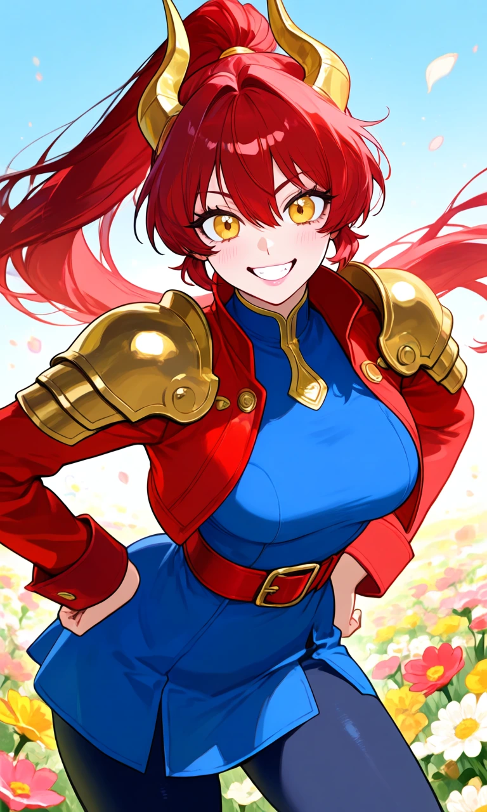

Grace
Female · True Hybrid (Fairy/Dragon/Human)

Toddler Grace


Character Prompt
The toddler girl has big cute blue eyes, medium red hair, and small gold horns.
Main Outfit
She is wearing a cream tank top with frill trim and cream color puffy shorts with frill trim.
Child Grace


Character Prompt
The child girl has big cute yellow eyes, her red hair in a high ponytail, she has gold horns.
Main Outfit
She is wearing a blue dress with white frill trim.
Teen Grace


Character Prompt
The teen girl is pouting, her red hair in a high bun. She has fang bangs, big cute gold eyes, and gold horns. She has medium breasts.
Main Outfit
She is wearing a short sleeve blue dress with white frill trim.
Grace


Character Prompt
The red hair woman with a high ponytail with long fang bangs. She has big, cute gold eyes with long eyelashes, pink lips, large breasts, and gold horns.
Main Outfit
She is wearing a blue dress, red belt, navy leggings. She is wearing a red crop jacket with gold shoulder armor.